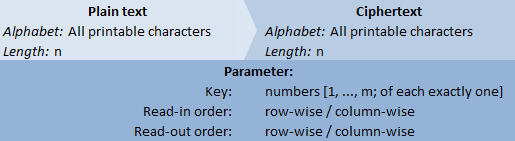
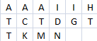
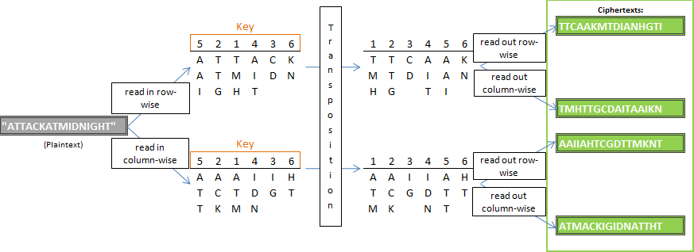
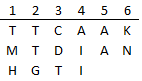
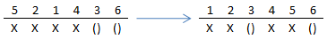

The transposition cipher relocates the letters of the plaintext based on an order generated from the keyword. Transposition ciphers are one of the oldest cryptographic algorithms. A well-known example is the Scytale, which was documented first in the Pelleponesian war, 431 BC.
Transposition ciphers are one of the basic encryption algorithm classes. The transposition cipher which is implemented in the JCrypTool is the columnar transposition, but transposition itself covers all ciphers where the pure replacement of characters in a text takes place.

The columnar transposition uses a so-called transposition table, which contains the content that is subject of the encryption. The columns of the transposition table are transposed in the encryption progress to displace the characters of the whole text in one step. All in one, there are three steps to do: 1) reading in the plain text into the transposition table; 2) transposing the columns of the table; 3) reading out the content of the table into the ciphertext.
We begin with the second step – the column transposition: The key determines the new order of the columns. It consists of numbers, which describe this order. The reordering can be visualized by writing the transposition key over the table as seen in the following picture:
So, the reordering of the columns is done such that over every column the number is equal to the actual position of the column.
Now, the table is encrypted. When a text has to be encrypted, it has to be read into the table first, and after the transposition, the table has to be read out into text again. Two methods are common: row-wise and column-wise read in/out.
The number of columns is defined by the key length. Such, based on the text length, the dimensions of the table can be calculated. In the picture above, the text seems to be „ATTACKATMIDNIGHT“ (apparently read in row-wise) – we will use this example often in this article. This text is 16 characters long. The key is „5, 2, 1, 4, 3, 6“, 6 characters long. This means, the table will have 6 columns, thus 3 rows are necessary to contain the text.
When the text is read in row-wise, it turns into:

When the text is read in column-wise, it turns into:

At the column-wise-example it is clear that the free cells, that couldn’t be filled, must always be in the last row (at row-wise read-in, this happens automatically).
The read-out of the table into text happens analogue, row- or column-wise. Blank cells are simply ignored here.
Below: a picture of all possible encryption paths, using the already known text and key (just the read in/out-orders are variable). 
To every key k, there exists an inverse key, i. Encrypting a table with k, and then with i, the result is the initial table again. This inverse key I can be created from k as follows: k is of length n. Take a sequence of numbers z = “1, 2, …, n”. Encrypt this sequence with k, and a sequence z’ = i is the result. For example:
k = „5, 2, 1, 4, 3, 6“
z = „1, 2, 3, 4, 5, 6“
The encryption results in: z‘ = i = „3, 2, 5, 4, 1, 6“. The inverse key i to k thus is „3, 2, 5, 4, 1, 6“.
To decrypt a text, which was encrypted with k, the inverse key i has to be calculated, and the ciphertext has to be “encrypted” with i. Of course, the knowledge of the read-in and read-out order at the encryption is important. A text, that has been encrypted with read-in method: “column-wise” and read-out-method: “row-wise”, has to be “encrypted” with i, read-in-order “row-wise” and read-out order “column-wise”, in order to decrypt the text. The most computer programs, like JCrypTool, do these inversion methods automatically, meaning, that the input at decryption should be the same as at encryption.
The following problem occurs, when encrypting a text, which is not filling the transposition table completely:
In the last row, blank cells occur. Many algorithms fill those with filling characters, like “X”, to avoid complications. This is not really necessary. An example:
First, the encrypted text will be „TTCAAKMTDIANGHTI“(read out row-wise). If one wants to decrypt this text (in knowledge of the key), he would first read the text into a table row-wise:

This table is different to the table that was really the result of the encryption, because the blank cells have been neglected. They have to be restored, in order to fill the text into the table right. This is possible, because the length of the text is known, and such, the dimensions of the table and the numbers of blank cells at the encryption. The way to restore the blank cells is, to simulate, where blank cells have been put at encryption. Example:
Length of the text: 16; key length: 6 ->
table with 6 columns and 3 rows -> two blank cells
Simulation of the encryption: () = blank cell, X = unimportant character
(interesting are only the blanks).

This means, that at re-reading the text into the table, the cells 3 and 6 in the last row cannot be filled with ciphertext characters. The table, that has really been the result of the encryption in the first place can be reconstructed now, and decrypted properly without loss of data.